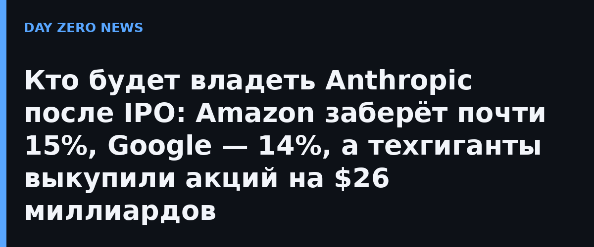

Anthropic на этой неделе подала в SEC обновлённую декларацию S-1 о готовящемся размещении акций на бирже Nasdaq под тикером «ANT». Из документа впервые подробно стало видно расклад сил после IPO. Amazon, вкладывавшаяся в Anthropic с 2023 года, получит чуть меньше 15% компании (14,7%) — в форме специального класса немых акций. Но это не потолок: у Amazon остались конвертируемые обязательства с ценой конвертации примерно $2,09 или $5,05 за акцию в зависимости от года инвестиций. Конвертируй она их все прямо сейчас — владела бы 23,8%. Пока компания предпочла часть придержать.
Google получит чуть меньше 14% (13,7%), тоже немыми акциями — часть из них конвертация прежних обязательств, часть участие Google в самом размещении.
Отдельная строка декларации: пул технологических компаний — AMD, Broadcom, Google, Micron, Microsoft, Nvidia и TSMC Partners — договорился купить немые акции нового размещения на $26 млрд. При этом Google и Nvidia внесли по $10 млрд каждая. Для сравнения: весь предыдущий раунд Anthropic оценивался в десятки раз скромнее, а СМИ уже называют предстоящее размещение крупнейшим IPO в истории; в amended S-1 фигурирует ориентир цены $70–78 за акцию, хотя официально Anthropic ценовой диапазон ещё не подтверждала.
Интерес Amazon шире, чем просто пакет акций: параллельно Anthropic обязалась потратить более $100 млрд на облачные сервисы AWS в ближайшее десятилетие. То есть Amazon одновременно акционер, поставщик инфраструктуры и крупнейший клиент — схема, за которой Google наблюдает с тем же AWS-конкурентом в лице Google Cloud. Рынок теперь будет смотреть не только на котировки «ANT», но и на то, во что конвертируются оставшиеся обязательства Amazon: одно решение правки в Сиэтле может добавить к капитализации ещё почти 9 процентных пунктов владения.